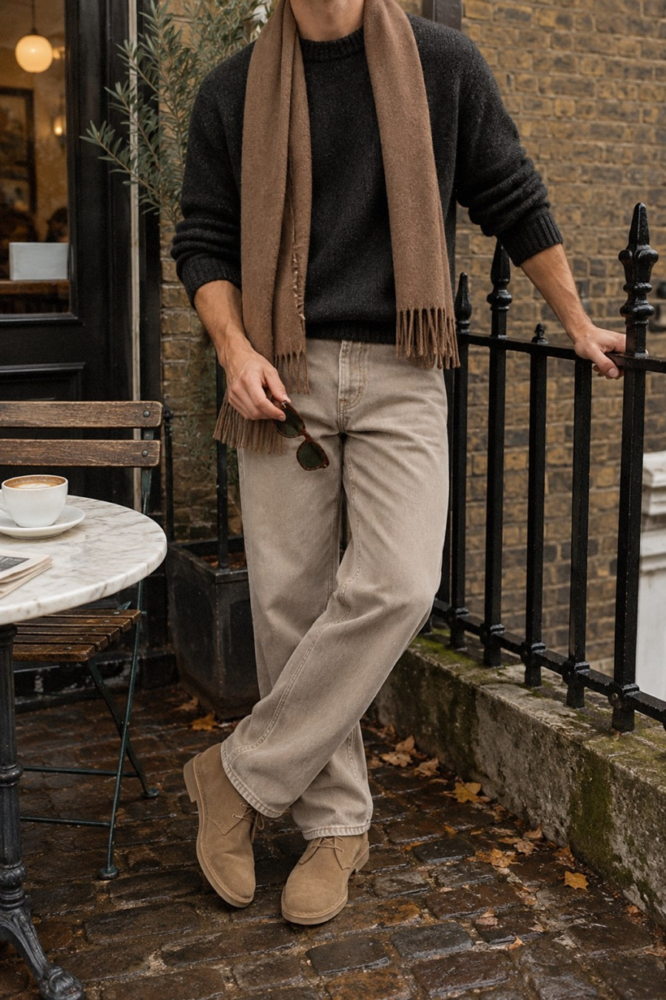
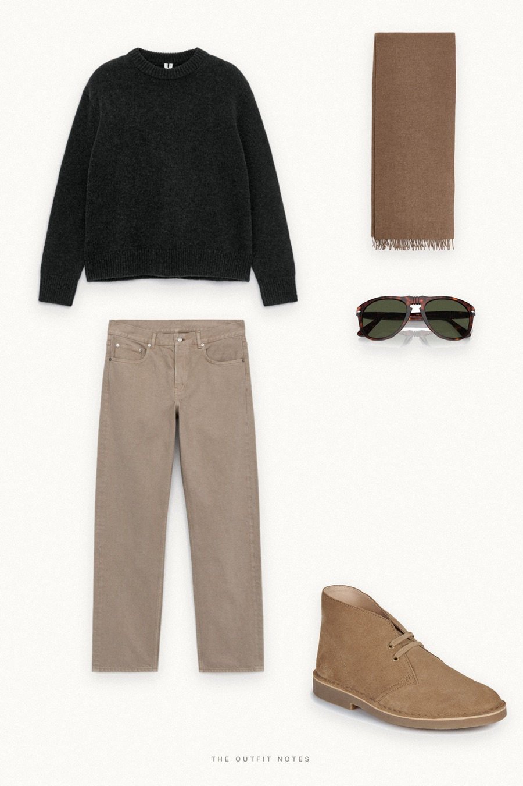

Charcoal Sunday
heavy knit, soft ecru, sand suede


An easy fall outfit for men: a heavy charcoal wool jumper from ARKET over loose straight ecru jeans, sand suede Clarks desert boots and a camel wool scarf, with Persol 649 sunglasses. Dark texture over light denim is the simplest old money outfit for men to copy this autumn. Quiet luxury on a budget.
The pieces
This page contains affiliate links: if you buy through them, we may earn a commission at no extra cost to you. Disclosure.
 ARKET
ARKET
Charcoal chunky wool jumper
Shop ARKET
ARKET
Ecru straight jeans
Shop Clarks
Clarks
Sand suede desert boots
Shop ARKET
ARKET
Camel wool scarf
Shop Persol
Persol
Havana 649 sunglasses
Shop
Prices are indicative, taken when the look was published, and may have changed. Pictures of the outfit are AI-generated illustrations of real products; the product photos are the retailers' own.
Published 1 October 2026.